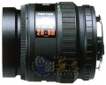

SMC F 28-80/3.5-4.5采用12片/9组的镜头结构，最近对焦距离为0.4m，最大放大倍率为0.25。
俺的是红字版，宾得当时用心做好的标变镜头。目前价格不高，性价比好！
色彩浓而不腻，层次很好，出片是典型的宾得风格，有德味。最大光圈锐度可用。做工比后来的FA28-70/4和FA24-90要好很多。在K5上对焦速度较快。
光圈只有5叶片，少了点。 镜头伸长是广角，不是内变焦。
成像非常好的一款镜头,光圈收一档就很锐了,价格也不贵,非常超值,对焦迅速有力
全程锐度挺好,光圈收一档基本全程可用,口径大,8片光圈叶片,金属镜身,色彩也不错, 微距效果也挺好,对焦速度挺快,价格便宜,只要400元,比较给力的挂机头
镀膜差点,抗眩光能力差一些,最近对焦距离只能80cm左右.镜头体积比较大,对焦声音有点大,
有德味，油润无比，色彩浓郁，特别是对红色、黄色、蓝色、绿色的表现很有味道！焦外也不错！
1.做工很好，分量很足，外观有塑料感，但是从重量上就知道用料讲究，金属镜筒！ 2.镀膜很好，表现了宾得的色彩； 3.对焦速度还不错，作为宾得第一代自动镜头，质量上乘； 4.光圈比较大，能够满足普通室内外拍摄需要。
1.外观塑料感太强了，让人感觉不放心； 2,有点重，拿在手上太累了； 3.不是恒定光圈，如果是恒定光圈就更完美了！